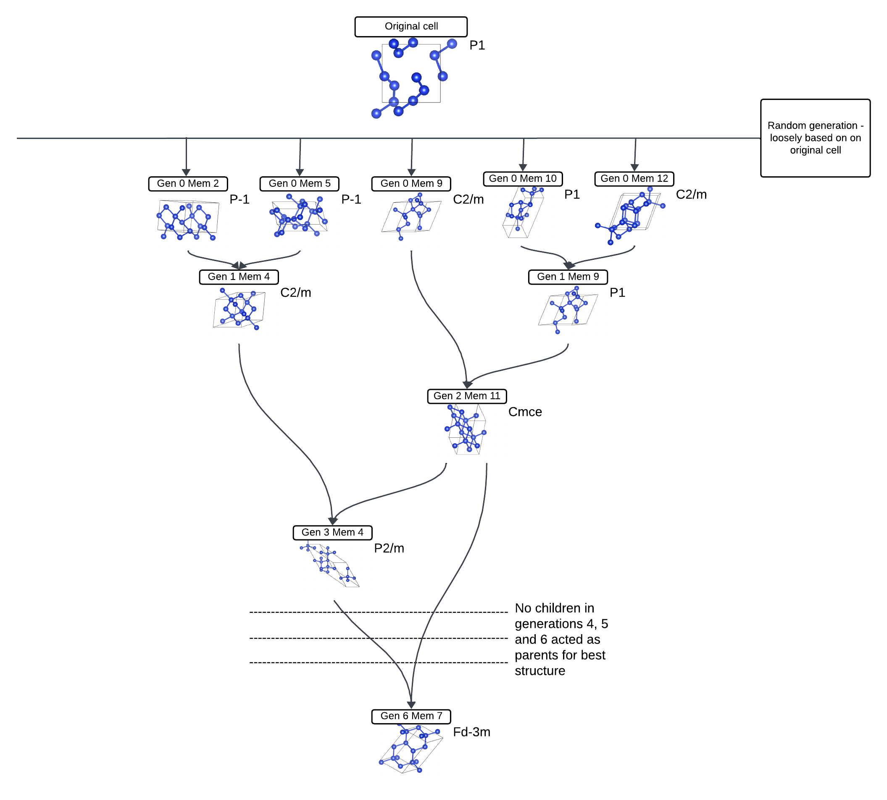

简介
在本教程中，我们将详细探讨使用 CASTEP GA 时其具体执行的操作，分析输入文件的作用以及输出文件所传达的信息。我们将以硅为例，逐步说明这一过程——从一个严重畸变的金刚石晶胞开始，最终得到一个标准的金刚石结构。
输入文件
我们将使用 cell 文件
Si.cell
%block LATTICE_ABC
ang
5.4 5.4 5.4
90 90 90
%endblock LATTICE_ABC
%block POSITIONS_FRAC
Si 0.2 0.01 0.04
Si 0.21 0.29 0.30
Si 0.59 0.43 0.03
Si 0.9 0.81 0.30
Si 0.53 0.03 0.58
Si 0.72 0.21 0.79
Si 0.04 0.45 0.4
Si 0.28 0.85 0.69
%endblock POSITIONS_FRAC
%BLOCK SPECIES_POT
QC5
%ENDBLOCK SPECIES_POT
symmetry_generate
symmetry_tol : 0.05 ang
请注意，这只是一个高度畸变的理想金刚石硅晶胞版本—— LATTICE_ABC 定义了其立方结构，其晶格参数符合预期，而所有硅原子的分数位置均略微偏离金刚石结构中预期的位置——例如第一行
Si 0.2 0.01 0.04
仅略偏离完美金刚石中的值，which是
Si 0 0 0
在正常的 CASTEP GA 运行中，所有硅原子的位置，甚至初始晶胞的结构，都是完全任意的，而且在大多数情况下对计算结果影响很小。然而，在本案例中，我们希望系统能够快速达到金刚石结构，以便更方便地分析其演化过程。
对于 param 文件我们将使用
task = genetic algor # Run the GA
ga_pop_size = 12 # Parent population size
ga_max_gens = 6 # Max number of generations to run for
ga_mutate_amp = 0.05 # Mutation amplitude (in Angstrom)
ga_mutate_rate = 0.1 # Probability of mutation to occur
ga_fixed_N = true # Fix number of ions in each member based on input cell
rand_seed = 129189 # Random seed for replicability
# continuation = Si.xyz
#################################################################
# CASTEP Geomtery Optimisation Parameters #
# These will be used for each cells geom opt/fitenss evaluation #
#################################################################
comment = Si_Convex_hull
#rand_seed = 100003 # Random seed for replicability
opt_strategy = SPEED # Run quick
geom_max_iter = 211 # Can have a large max iter as using pair potentials
# Don't write most output files for each population member
write_checkpoint = NONE
write_bib = FALSE
write_cst_esp = FALSE
write_bands = FALSE
write_cell_structure = TRUE
######################################
# Any extra devel code options #
# & required GA specific devel flags #
######################################
%block devel_code
# Command used to call castep for each population member
# If not given this defaults to castep.serial
CMD: castep.serial :ENDCMD
GA:
PP=T # Using a pair potential
IPM=M # Randomly mutated initial population
CW=24 # Num gens for convergence
NI=F # No niching
FW=0.5 # Fitness weighting
# Asynchronous running options
# Required for asynchronous running, without this all geom opts will be run
# one after another
AS=T # Run geometry optimisations asynchronously
MS=3 # Run 3 geometry optimisations at once
# Random symmetry children
NUM_CHILDREN=11
RSC=T
RSN=1
CORE_RADII_LAMBDA=0.8 # Core radii 0.8 pseudopotenital radii
SCALE_IGNORE_CONV=T # Ignore convergence in fitness calcualtion
:ENDGA
# Use pair potentials in geometry optimisations and perform a final snap to symmetry
GEOM: PP=T SNAP=T :ENDGEOM
# Use the Stillinger-Weber pair potential
PP=T
PP:
SW=T
:ENDPP
%endblock devel_code
这里还有很多内容可以讨论。有关所有关键术语的更多信息，请参阅文档（稍后添加链接）。不过，我们先来看一下此处的关键信息：
ga_max_gens定义了它将运行的代数数量。6 是一个非常低的数量，但在这里足以完成任务。ga_mutate_amp描述了这些突变的严重程度。再次，这里使用的是一个小数值，因为我们从最终结果不远的地方开始计算。ga_mutate_rate它告诉你细胞不同部分发生突变的概率——0.1是一个相当常见的使用值。
本教程中的关键行是
rand_seed = 129189
这意味着你可能能够重现类似的结果，尽管这并不保证[[检查这一说法是否属实]]
运行
我们现在可以对硅（Si）运行castep的GA。这应该需要大约3分钟，但在运行过程中请观察其发生的变化——你可以使用 tail -f Si.castep 以跟踪如何的 castep 正在生成输出文件。请定期刷新目录以查看新生成的内容。
最先生成的文件将具有与 Si.gen_000_mem_001.cell 并且 Si.gen_000_mem_001.param - 这是第1个st 0 的成员那 生成，使用随机方法生成 Si.cell 以及在文档中指定的突变值 Si.param 文件
说明
我将把未来的文件称为是 <seed>.file_ending为简洁起见，必要时需具体说明
你应该得到总共12个成员，直到 mem_012。当它运行时，0那 生成将开始得到 <seed>.geom 并且 <seed>-out.cell 每个成员的输出结果是通过在随机生成的单元格上快速进行几何结构优化（ADD LINK）获得的。
在上一代成员完成其几何结构优化后，将生成下一代：你会得到 <seed>.cell 并且 <seed>.param 文件。
这是关键点所在。 castep 输出文件变得有趣了。你有一个表格，其内容开始像
GA: gen # 1 parent # 1 enthalpy = -3.940733E+000 eV/atom un-scaled fitness = 0.684242 conv = T member error = F seed = Si.gen_000_mem_001 vol/ion = 19.4307 A**3/atom
GA: gen # 1 parent # 2 enthalpy = -4.070795E+000 eV/atom un-scaled fitness = 0.791433 conv = T member error = F seed = Si.gen_000_mem_002 vol/ion = 20.4806 A**3/atom
GA: gen # 1 child # 11 enthalpy = -4.200422E+000 eV/atom un-scaled fitness = 0.868980 conv = T member error = F seed = Si.gen_001_mem_011 vol/ion = 20.7893 A**3/atom
GA: gen # 1 child # 12 enthalpy = -3.296903E+000 eV/atom un-scaled fitness = 0.119203 conv = T member error = F seed = Si.gen_001_mem_012 vol/ion = 28.3264 A**3/atom
该 parent 行使用生成0成员作为种子，并给予它们一个 un-scaled fitness这意味着，所有来自第0代的几何优化单元格都会进行焓值和相似性检查——焓值越低，该结构被认为越优，因为较低的焓值有助于获得最佳结构。然而，如果某个结构与另一个父代结构过于相似，则会受到惩罚，以促进多样性。
那些父母随后进行交配以产生后代，而后代将像之前一样经历突变和几何优化。一个父母参与交配的概率基于其适应度评估——在上述例子中，父代2比父代1更有可能参与交配（添加轮盘赌随机性的链接）。
您可以通过查找部分来找到每个个体孩子的祖先。 castep 如文件之类
GA: Member filename Si.gen_002_mem_011
GA: Parent 1 generation 0 and member 9
GA: Parent 2 generation 1 and member 9
这里你可以看到，第2代成员11是通过使用第0代成员9和第1代成员9作为父代生成的。
在子代生成并完成几何优化后，它们会与父代完全相同地进行处理，并且每个成员都会重新评估其适应度——焓值已经计算得出，但必须对相似性进行惩罚。这导致了表单被标记为非常相似的表格。
GA: updated fitnesses with weighted fitness function
对于第2代，表格从以下内容开始
GA: gen # 2 parent # 1 enthalpy = -4.225502E+000 eV/atom un-scaled fitness = 0.866683 conv = T member error = F seed = Si.gen_001_mem_006 vol/ion = 19.0994 A**3/atom
GA: gen # 2 parent # 2 enthalpy = -4.200403E+000 eV/atom un-scaled fitness = 0.839781 conv = T member error = F seed = Si.gen_000_mem_009 vol/ion = 20.7940 A**3/atom
这里你会注意到，第0代（2）中都有父母来自两个世代。并 线）和生成（1st) - 基于其适应度，12个个体被淘汰，其余12个个体则存活下来成为下一代的父母。
相同的精确过程不断重复——父母进行繁殖（更适应环境的个体繁殖更多），后代发生突变并优化，所有父母和后代被作为平等成员进行比较，表现最优的个体将进入下一代成为父母。这一过程一直持续到第6代为止。
最好的结构
找到最佳结构的方法相当简单——如果使用 Linux，您可以使用该命令
grep 'child' Si.castep | sort -k10,10n | head -20
在我的情况下，生成第6个成员第7个的焓值最低。运行
c2x --int -e=0.1-0.0001 Si.gen_006_mem_007-out.cell
告诉我，它是 Fd-3m - 立方金刚石结构（尽管低容忍度结构是 R-3m —— 这是一次非常短的计算，因此尚未达到完美结构，但已经很接近了）。该晶胞的“家族树”如下：

让我们以上述步骤来查看在此特定情况下发生了什么——
- 零那 生成是随机进行的。在这种情况下，成员 2、5、9、10 和 12 最终成为最终结构的祖先。
- 成员2和5杂交产生1,4（发生突变）。成员9也是如此。
- 第2代成员11是通过0、9和1.9生成的。这意味着在第1代的24个潜在父代中（由12个父代及其产生的12个子代构成），这两个个体足够适应，能够成为第2代的父代。
- 第3代成员4是通过2、11和1、4的杂交产生的。这意味着1、4在第1代（当时它是子代）以及第2代（当时它与其他亲本及其后代竞争）的适应性测试中均存活下来。
- 在第4、5和6代中，没有产生后代。展望未来，这意味着1,4和2,11要么根本没有交配（亲本组合为ROULETTE RANDOM），要么它们所产下的后代并没有出现足够有利的突变，从而形成焓最低的结构。
- 最后，在第6代中，3,4与2,11（其自身父代——在子代生成之后，它们都被视为相等的父代候选）结合生成了6,7。
请注意，在实际运行中，家族树很可能要复杂得多——如前所述，两者 cell 并且 param 文件旨在通过少数代和适度突变获得良好的结构。即使使用这样的文件，是否能获得此类结果仍然具有高度的偶然性。这只是一个简单的演示。